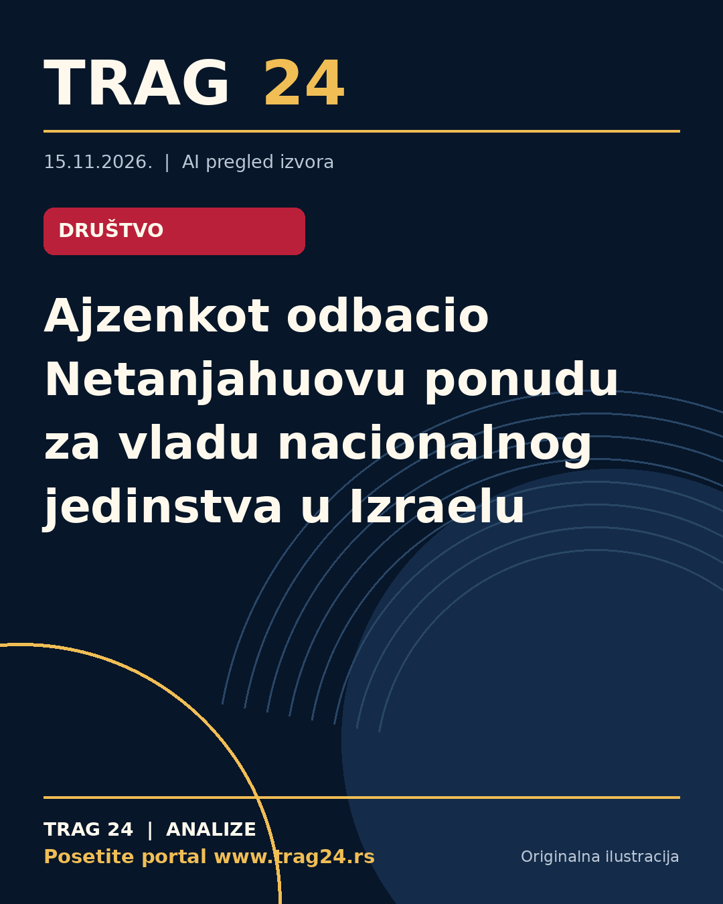

Ajzenkot odbacio Netanjahuovu ponudu za vladu nacionalnog jedinstva u Izraelu

ŠTA SE DOGODILO
Lider izraelske stranke Jašar i mandatar za formiranje nove vlade Gadi Ajzenkot odbacio je ponudu premijera Izraela u tehničkom mandatu Benjamina Netanjahua da započnu pregovore o formiranju vlade nacionalnog jedinstva. Ajzenkot smatra da je ovaj poziv politički trik i isključuje partnerstvo sa Netanjahuom, iako je otvoren za saradnju sa strankom Likud bez Netanjahua pod sopstvenim vođstvom.
HRONOLOGIJA
Netanjahu je ranije istog dana pozvao na formiranje vlade koja bi obuhvatila sve stranke sa jevrejskom većinom. Prošlih meseci je njegov blok izgubio parlamentarnu većinu, a prethodnog četvrtka predsednik Izaka Herzog je dao mandat Ajzenkotu za formiranje nove vlade. Između ovih događaja predstavnici Likuda i Jašara su zakazali sastanak za naredni dan, što je i pomenuto u Ajzenkotovoj izjavi.
ŠTA NAVODE IZVORI
Izjave Ajzenkota ukazuju da on vidi Netanjahuov poziv kao pokušaj opstrukcije formiranja vlade jer, kako navodi, postoji apsolutna većina poslanika i stanovnika Izraela protiv Netanjahua. Takođe, Ajzenkot traži raskid sa ekstremističkim elementima, konkretno sa strankom "Jevrejska snaga" ministra Itamara Ben Gvira, smatrajući da svi koji su bili na pozicijama moći u vreme napada Hamasa 7. oktobra 2023. godine treba da se povuku.
ŠTA JE POTVRĐENO
Potvrđeno je da je Ajzenkot odbio Netanjahuovu ponudu za vladu nacionalnog jedinstva i da isključuje partnerstvo sa Netanjahuom. Takođe je potvrđeno da su zakazani razgovori između predstavnika Likuda i Ajzenkove stranke Jašar. Netanjahuov blok je izgubio parlamentarnu većinu na izborima predhodnog meseca, a Ajzenkot je formalno dobio mandat za sastav nove vlade od predsednika Herzog.
ŠTA NIJE POTVRĐENO
Nije jasno da li će doći do dogovora između Ajzenkota i drugih članova Likuda, uključujući perspektivu saradnje bez Netanjahua. Takođe nije potvrđeno da li će zahtev za odstupanje ekstremističkih stranaka biti usvojen ili prihvaćen od strane drugih političkih aktera.
ŠTA OSTАJE OTVORENO: Ostaje neizvesno kako će se dalje odvijati pregovori između stranaka nakon odbijanja Netanjahuove ponude i da li će Ajzenkot uspeti da oformi stabilnu vladu bez učešća trenutnog premijera u tehničkom mandatu. Takođe nije poznato kako će ostale političke snage reagovati na uslove koje je Ajzenkot postavio u vezi sa uklanjanjem ekstremističkih elemenata.
Izvori
- https://www.blic.rs/vesti/svet/ajzenkot-odbacio-ponudu-netanjahua-za-formiranje-vlade-nacionalnog-jedinstva/56essw6
- https://insajder.net/prenosimo/ajzenkot-odgovorio-na-ponudu-netanjahua-za-formiranje-vlade-nacionalnog-jedinstva
Ova analiza je pripremljena uz pomoć veštačke inteligencije na osnovu javno dostupnih izvora. Navodi izvora nisu nužno nezavisno potvrđeni.